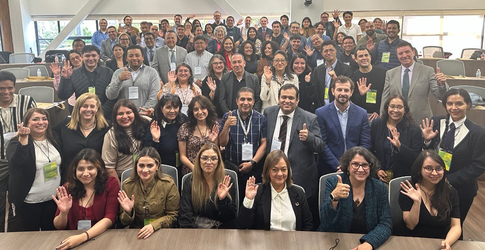

On November 6, I had the opportunity to speak at Inspire & Connect: Clarivate Mexico User Group Meeting 2026, held at Universidad Panamericana in Mexico City.
Alongside my colleague Margarita Pérez Martínez, I presented Nuestro camino hacia BIBFRAME y Datos Enlazados: la experiencia de las Bibliotecas de la Universidad de Miami (Our Journey toward BIBFRAME and Linked Data: The Experience of the University of Miami Libraries), sharing our journey and the experiences we have gained while exploring and implementing linked data technologies at the University of Miami Libraries.


The main goal of our presentation was to raise awareness of and encourage the adoption of linked data in Alma. We introduced the features already available and discussed how they can transform the description and management of bibliographic resources.
We explored BIBFRAME and its role in the evolution of library metadata, described our institution's path toward linked data, and shared some of the lessons and challenges we have encountered along the way.
A central part of the session was a live demonstration of the BIBFRAME editor in Alma, showing how these tools can be used in practical cataloging workflows.
We hoped to help library professionals in Mexico become familiar with these features, follow their development, and consider how they might benefit their own institutions.
It was wonderful to share our work with colleagues in Mexico, learn from their experiences, and discuss the future of cataloging and linked data. I am very grateful to Clarivate for the invitation!
Beyond the professional event, I also had time to explore the streets of Coyoacán and visit the beautiful National Museum of Anthropology. It was a great opportunity to combine professional exchange with discovering more of Mexico's rich cultural heritage.
← Back to Professional Activity